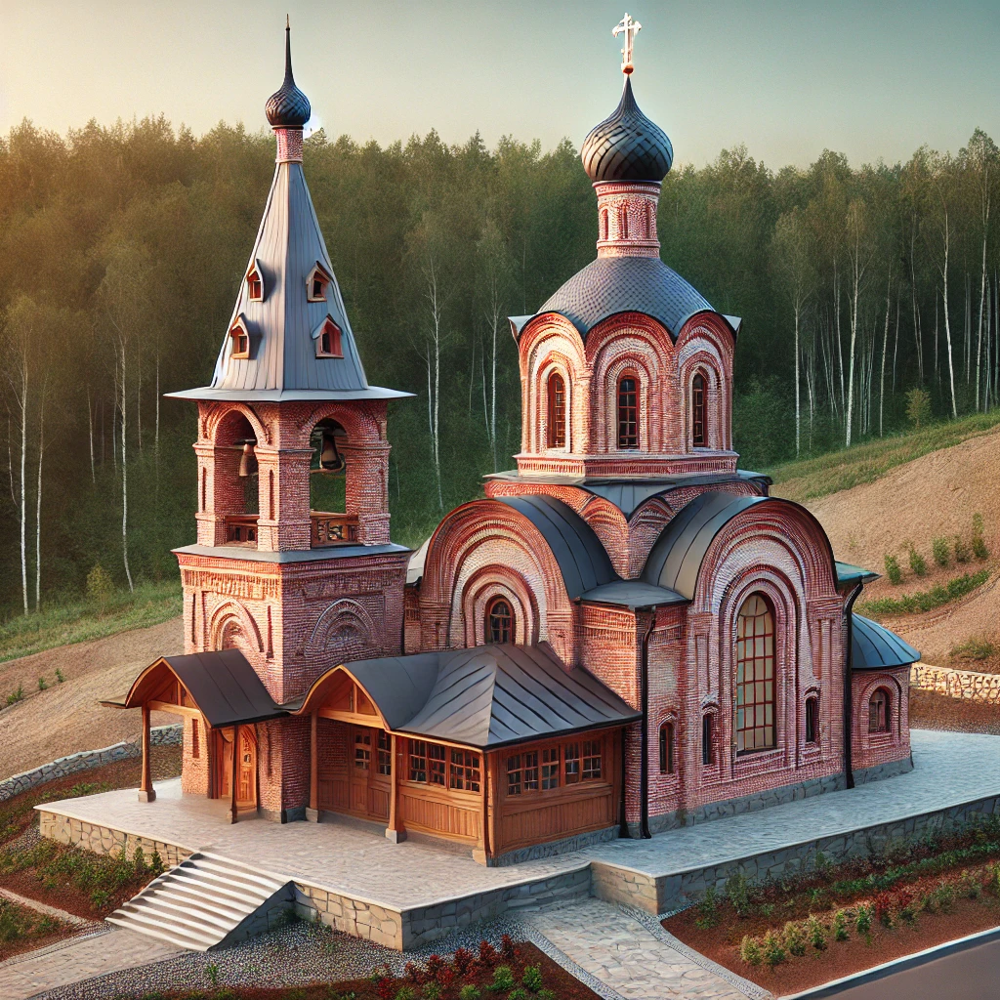

Главное
История
Храмы
Церковь Николая Чудотворца
Церковь иконы Божией Матери Владимирская
Храм Ризоположения
с. Мироханово
с. Повалихино
Карта
Контакты
Церковь Ризоположения. Село Жуково
Церковь Ризоположения является важным историческим памятником, расположенным в нашей области.

Вернуться на главную страницу